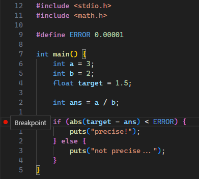
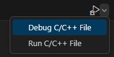
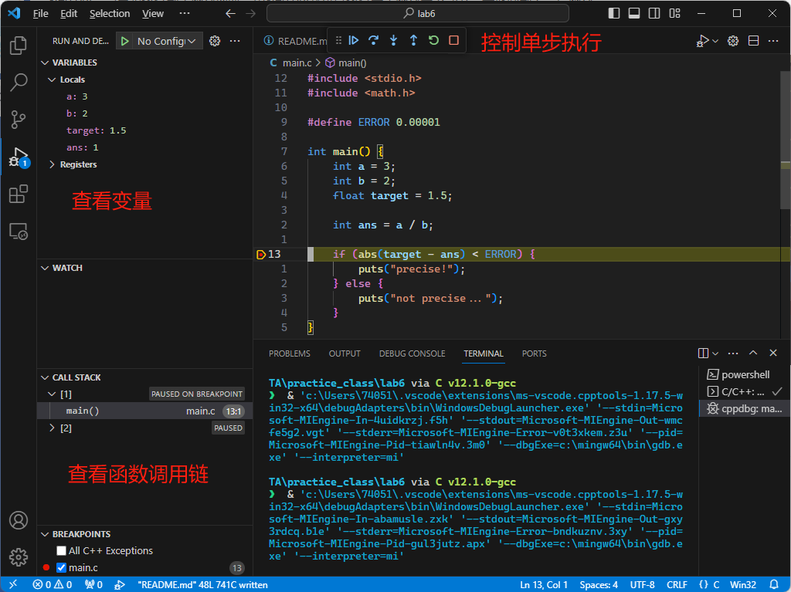
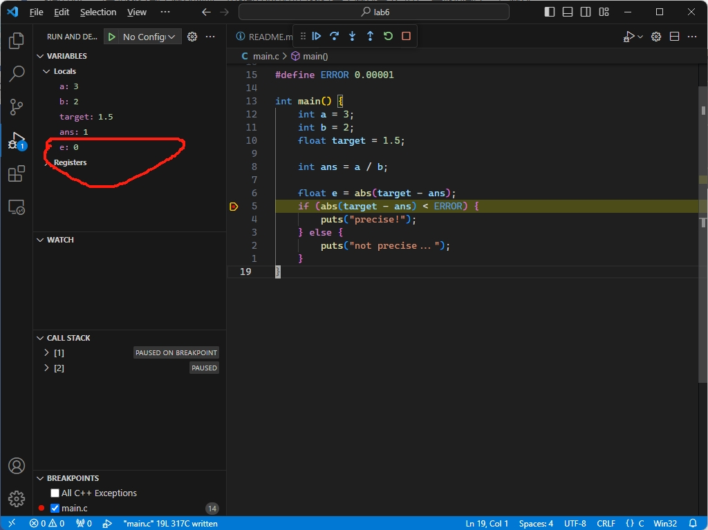
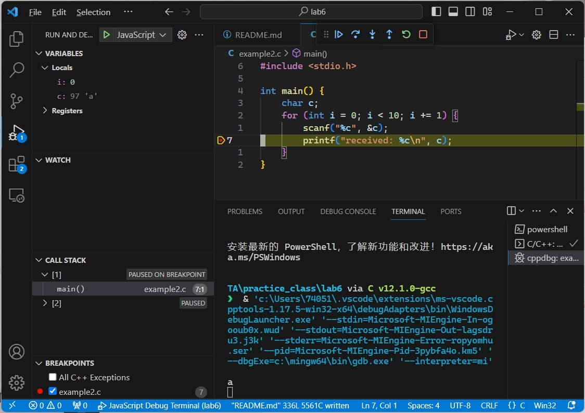
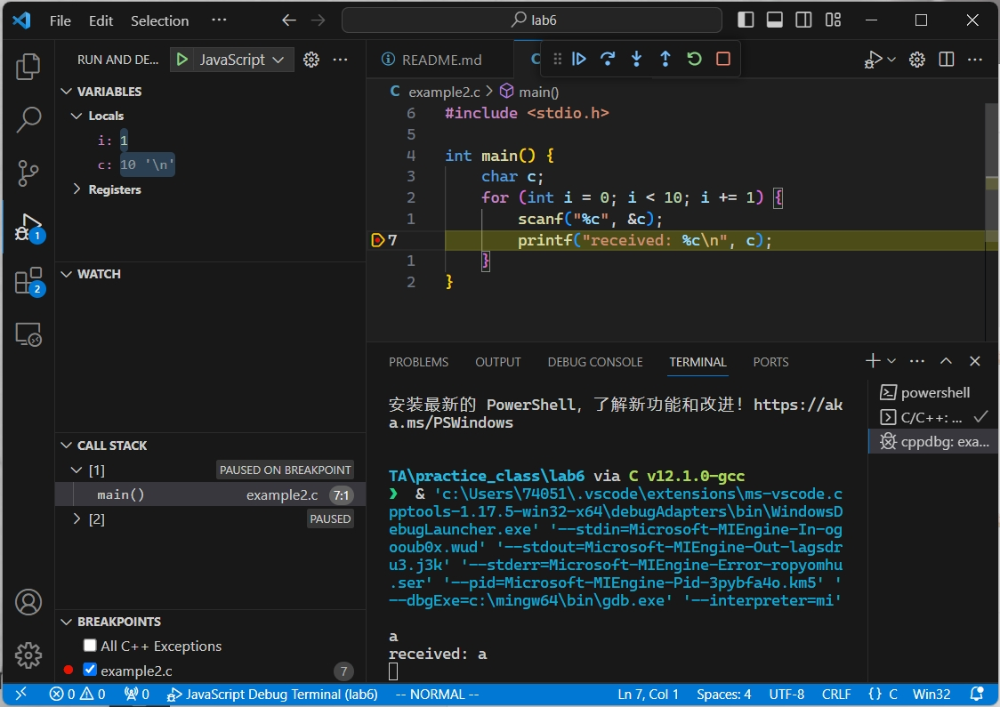
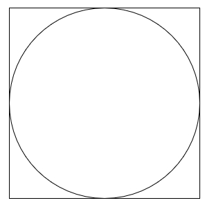
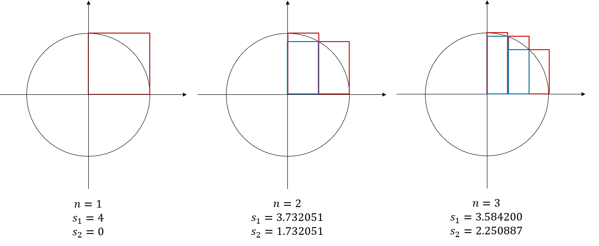

本节课的内容：
介绍vs code debug
循环代码示例
4道作业题：
孪生素数
蒙特卡洛
圆、极限与积分
RSA算法
超星提交截止时间 2023/10/27 23:59
人是会犯错的，我们写程序时不一定可以洋洋洒洒地bug free. 很多逻辑上的错误不容易察觉，这个时候我们需要一些找bug的手段，所谓debug。我们以下面这个例子演示debug的流程：
#include <stdio.h>
#include <math.h>
#define ERROR 0.00001
int main() {
int a = 3;
int b = 2;
float target = 1.5;
int ans = a / b;
if (abs(target - ans) < ERROR) {
puts("precise!");
} else {
puts("not precise...");
}
}
如果你还记得先前课程中提到的整数除法，那么你应该期望这个程序输出"not precise..."
这个代码，GPT是这样说的：
根据给定的代码，它会输出 "not precise..."。
在这段代码中，首先定义了一个名为 ERROR 的常量，其值为 0.00001。然后，声明了变量 a 和 b，
分别赋值为 3 和 2。接下来，声明了一个浮点数变量 target，赋值为 1.5。
代码中的 ans 变量被赋值为 a / b，即 3 / 2。由于 a 和 b 的类型为整数，所以这是一个整数除法，
结果会被截断为整数。因此，ans 的值为 1。
然后，使用条件语句检查 target 和 ans 之间的差的绝对值是否小于 ERROR。在这种情况下，target
是 1.5，而 ans 是 1，它们之间的差的绝对值为 0.5，大于 ERROR 的值 0.00001。
因此，条件语句的判断结果为假，代码会执行 else 分支，输出 "not precise..."。
编译运行这个程序，输出的结果竟然是"precise!"
我们使用VS Code的Debugger来寻找问题

如图所示，你可以在代码行号的左边点击鼠标左键设置/取消断点，在debug模式下，程序会在执行这一行代码前的那一刻暂停程序
点击编辑界面右上角的Debug C/C++ File

然后你可以看到如下界面：

在中上方的有控制代码执行的几个按键，分别是
关于step over和step into: 如果你了解函数可以自己尝试尝试这两个的区别。
你可以在左边看到变量的值。如我们所料，整数除法的结果ans等于1，直到这一步为止程序如期运行。似乎在abs()之后出现Bug。
我们引入一个中间变量观察计算：
#include <stdio.h>
#include <math.h>
#define ERROR 0.00001
int main() {
int a = 3;
int b = 2;
float target = 1.5;
int ans = a / b;
float e = abs(target - ans);
if (abs(target - ans) < ERROR) {
puts("precise!");
} else {
puts("not precise...");
}
}
这里我们发现了问题：

我们期望为0.5的e实际的值为0. 搜索发现abs()只适用于整数
这样我们发现了问题所在：0.5被强制转化为int类型后变为0，对浮点数类型应该使用fabs()。替换后程序如我们期望的那样运行。
以上便是一个完整的debug流程，你需要提出假设，打断点，观察数据，尝试解释，搜索资料，尝试解决问题（和科学实验一样）。
另一个例子：
#include <stdio.h>
int main() {
char c;
for (int i = 0; i < 10; i += 1) {
scanf("%c", &c);
printf("received: %c\n", c);
}
}
超星讨论区有帖子讨论过这个问题，上面的代码输出怪异，并且只会循环5次
a
received: a
received:
c
received: c
received:
b
received: b
received:
e
received: e
received:
f
received: f
received:
在printf处设置断点，debug模型运行，在终端输入a，敲回车，第一次到断点时一切正常：

但是continue之后发生了意外的事情：

此时我们看到c的值变成了\n，并且本来应该阻塞住的第二次scanf并没有阻塞，只有再按一下continue才会继续等待输入。
这一过程在debug界面可以推理出来，scanf在读入一个字母输入以后，我们敲的那一个回车没有被处理，残留在外。下一次调用会将这个残留的回车，也就是\n读进来，导致意外的结果。观察变量i也可以发现我们a回车这个输入使循环小节运行了两次。
此前很多同学困惑的行为其实可以用debug的方式很容易发现。至于解决方案:
// %c前面加一个空格，表示在读入的时候跳过类似于\n的空字符
scanf(" %c", &c);
VS Code debugger基于一个名为GDB的开源软件。GDB本身虽然没有图形界面，但是能够方便在汇编指令层级上debug.
编译能够被debugger监控的程序需要加上-g选项
除了打断点之外，打印输出也是一种常用的debug方法
一般来说如果要一段代码执行n次习惯上会这样写：
for (int i = 0; i < n; i += 1) {
// code here
}
i从0开始，用i < n做截止判断。这样统一可以降低心智负担，在学习数组之后有更直观的体现
i += 1, i = i + 1, i++, ++i都无所谓
跳出外层：break跳出的是最里层的循环，有些时候我们想要跳出稍微外层的循环，这时可以引入控制变量帮助实现
int found = 0;
for (int i = 0; i < 100 && !found; i += 1) {
for (int j = 0; j < 100; j += 1) {
found = (i * 442 + j * 433 % 7 == 0);
}
}
学了条件判断和循环之后，我们已经可以解决很多问题了。
下面给一个计算最大公约数的例子
#include <stdio.h>
// 暴力求解
int main() {
int a, b;
printf("Enter two numbers: ");
scanf(" %d %d", &a, &b);
int min = (a < b) ? a : b;
int gcd = 1;
for (int i = 1; i <= min; i++) {
if (a % i == 0 && b % i == 0) {
gcd = i;
}
}
printf("The GCD of %d and %d is %d\n", a, b, gcd);
}
#include <stdio.h>
// 辗转相除法
int main() {
int a, b;
printf("Enter two numbers: ");
scanf(" %d %d", &a, &b);
while (b != 0) {
int temp = b;
b = a % b;
a = temp;
}
int gcd = a;
printf("The GCD is %d\n", gcd);
}
相差为2的两个质数称为一对孪生素数
目标：使用条件判断和循环打印出1到10000以内所有的孪生素数对
如果n和n + 2是孪生素数，请按以下格式打印
printf("(%d, %d)\n", n, n + 2);
例如1到100以内的孪生素数对
(3, 5)
(5, 7)
(11, 13)
(17, 19)
(29, 31)
(41, 43)
(59, 61)
(71, 73)
Hints:
搜寻一个数的因数时不需要遍历特别多的数
如果a * b = c，且a < b，那么a * a < c
蒙特卡洛方法是一种基于随机抽样和统计推断的数值计算方法。它通过生成大量的随机样本，并利用统计学原理来估算未知量的值或解决复杂问题（名字听上去很炫酷，实际就是随机模拟）。

蒙特卡洛方法可以用来计算圆周率(这里圆周率可能被渲染成$\pi$)：随机地往正方区域内扔小点时，这些小点位于圆内的概率等于 / 4
目标：用1,000,000个点计算圆周率
Hints:
你可以用这样生成0到1内的随机数
#include <stdlib.h>
#include <time.h>
int main() {
// 设置随机数种子
srand(time(NULL));
double x = (double)rand() / RAND_MAX;
}

图中的圆的半径为1。如图所示，我们可以用若干个等宽矩形来估计圆的面积。使用红色矩形估计的面积偏大，使用蓝色矩形估计的面积偏小（注意红色矩形的左上角在圆上，而蓝色矩形的右上角在圆上）。
定义误差为两种方法估计面积的差
目标：分别计算误差首次小于等于0.001和0.0001时估计面积的上下界。
例如，误差分别小于10, 1, 0,1, 0.01时的输出为：
(0.000000, 4.000000)
(2.495709, 3.495709)
(3.088336, 3.185897)
(3.136446, 3.146446)
程序运行时间可能需要数十秒，如果你想稍微快一点可以在编译的时候开启优化
gcc main.c -o main -Wall -Wextra -O2
题外话 1: 两道题计算圆周率的方法都是低效的，真高效还得从拉马努金说起
题外话 2: 这道题有没有让你想起数学分析中关于数列极限的定义？
RSA是一种经典的非对称加密算法，最早由Ron Rivest、Adi Shamir和Leonard Adleman于1977年提出。它的安全性基于数论中的两个重要问题：大整数的质因数分解和模幂运算。其算法可以表示如下：
目标：代码完成RSA加密解密流程
具体细节如下：
scanf